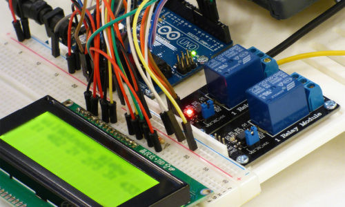
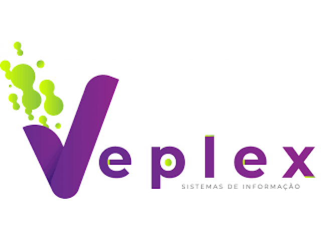
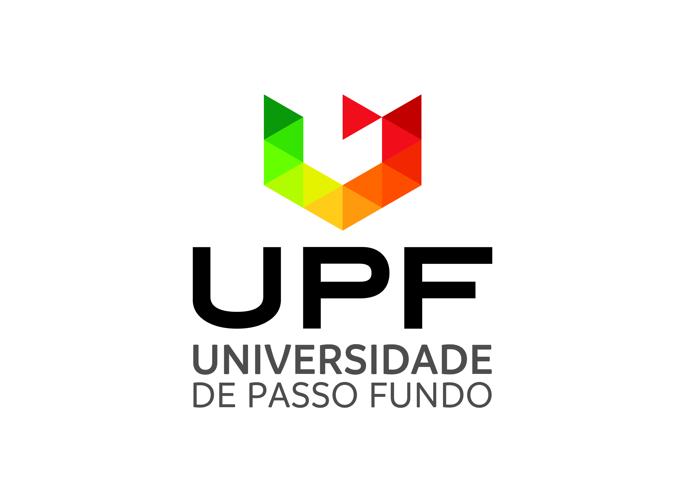

Trabalhos e bolsas de Iniciação científica
Experiências que tive sendo desenvolvedor.
-
Pibic Jr.
Desenvolvimento basico com arduino e demais programas na área da robotica Por conta de ter estudado no Integrado UPF, e pela boa relação com o professor Pavan, tive a oportunidade de parcipar de um projeto com ele, dentro do centro de pesquisa Mosaico, no ano de 2019, tive meu primeiro contato com programação e robotica.
Ler mais... -
Veplex Sistemas
Primeiro contato com backend e com banco de dados, trabalhando principalmente com PHP e, futuramente, estudando Flutter, se tornando um dev. Frontend Durante meu primeiro semestre de Ciência da Computação, tive a oportunidade de participar da equipe da Veplex, fazendo trabalhos para diversas empresas, fui designado na função de desenvolvedor BackEnd, iniciando meus estudos em PHP e Postgres, assim que finalizamos o projeto, fui convidado para iniciar meus estudos de Frontend com Flutter, voltado para Mobile.
Ler mais... -
Fábrica de Softwares UPF
Iniciei meus estudos na linguagem Java para o desenvolvimento do programa SISPAD, juntamente com o framework, para front end, Primefaces. Iniciei meus trabalhos sendo orientado pelo professor Jaqson, juntamente com meu colega Cristian, por conta da minha inexperiencia com java, comecei a estudar o projeto, para entender sobre a linguagem. Além de conhecer um novo framework, Primefaces, com uma biblioteca vasta, dando mais possibilidades para o projeto
Ler mais...